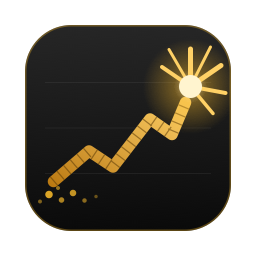
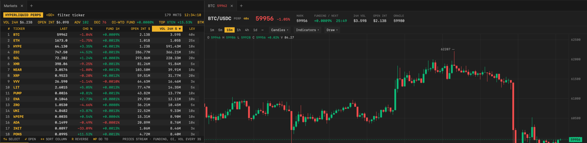

Signed on your Mac
Keys live in the macOS Keychain. Orders go straight to the exchange: no account, no server of ours in between.

A native macOS trading terminal for Hyperliquid and Solana.
Keyboard-first, monospaced, fast.

Keys live in the macOS Keychain. Orders go straight to the exchange: no account, no server of ours in between.
A wallet has a Hyperliquid address and a Solana address. Perps, and any Solana token through Jupiter and Nozomi.
⌘P finds any market. ⇧B and ⇧S trade. Split panes, drag tabs, and the layout stays put.
Right-click for a limit order, an alert or a price line. Entry, liquidation and resting orders are drawn where they sit.
Positions, history, watchlist, alerts and liquidations as tabs, next to web pages you want in view.
⌘K asks Claude or Codex to arrange your workspace and read data. It has no tool that places an order.
macOS 14 or later, Xcode 15 or later.
git clone https://github.com/fiberevm/powder.git
cd powder
./Scripts/package_app.sh && open .build/Powder.app